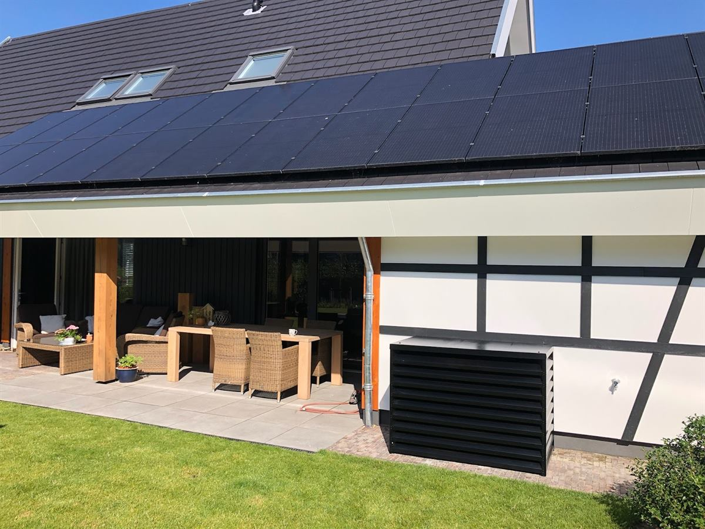

Weinig callbacks
Akoestiek is berekend, geen esthetische cover. Luchtweg blijft; COP hoeft niet te sneuvelen voor stilte.
HVAC · installateurs · aannemers
REDUCD is merkonafhankelijk: de kast volgt de buitenunit, niet het merk. Twaalf boutjes, Magnelis®, RVS 316. Standaardmaten vaak binnen een week. Voor nazorg bij geluid: Peutz ± 14 dB(A) vrijstaand, 10–12 dB(A) wand.

Akoestiek is berekend, geen esthetische cover. Luchtweg blijft; COP hoeft niet te sneuvelen voor stilte.
Handleidingen, specs en Peutz achter een kort formulier. Open de pro-hub.
Meet H×B×D inclusief voeten en bochten. Keuzehulp of calculator geven een waarschijnlijke S/L/XL of maatwerk.